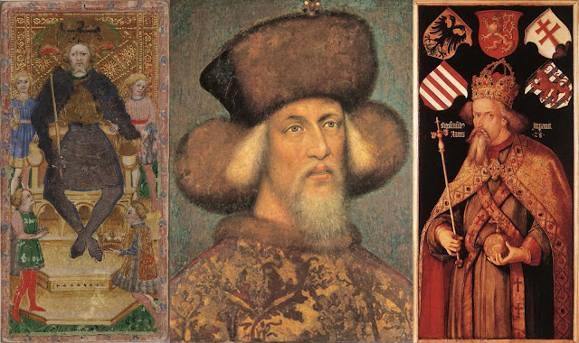
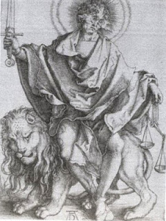
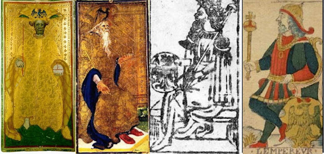
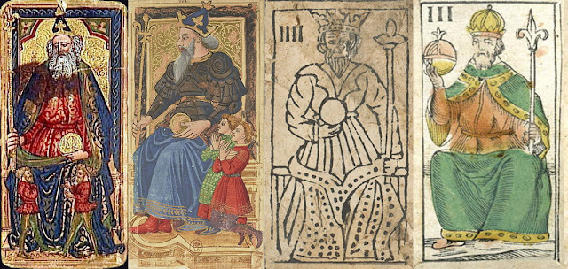
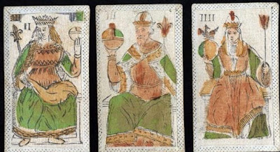
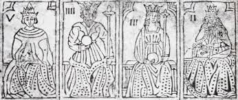
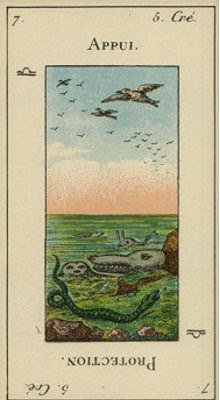
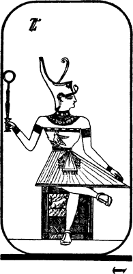
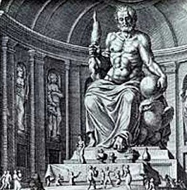

Emperor
Early History
The early history of the Emperor card is much the same as that of the Empress, as the iconography of the two is similar - until, that is, we come to the occultists of the late 18th century and after.
As in the case of the Empress, there are two main styles of depicting the Emperor. One, surely deriving from Milan, shows him with a hat or shield with a single-headed eagle, just as in the case of the Empress. The first Emperor of this type, at left below is in the same Visconti tarot deck, probably done in the 1440s, like the first Empress of this type (1).

There is a distinct resemblance between the man on the card and Emperor Sigismund IV, who came to Italy twice, in 1431 and 1433, the first time precisely to Milan, the traditional place for him to
receive the iron crown that made him the honorific King of Italy, the second time to Rome for his coronation as Emperor. Wikipedia says that he is about 65 years of age in the portrait. If so, that would be in 1433. The portrait in the middle is by Pisanello, 1430s; the other portrait is by Durer, long after his death, so done from surviving likenesses. (2)As with the Empress, there are four smaller figures surrounding the Visconti Emperor. The one at our lower right is even offering a crown. Even though Duke Filippo Maria Visconti did not perform thr function of carrying the iron cross in person at thsy time, the card may well commemorate the event. (3)
One feature of this card is the crossed legs. This attribute is missing from the other 15th century surviving instances of this type, but it reappears in the French so-called Tarot of Marseille, of which I have put Chosson of 1672-1734 above far right. Panofsky in analyzing an engraving by Durer, says the pose has to do with courts of justice: "This attitude, denoting a calm and superior state of mind, was actually prescribed to judges in ancient German law-books." His comment is in reference to Durer's engraving of Christ as the "sun of justice" holding the sword and scales of Justice; his lower legs crossed, in a manner similar to that of the Visconti Emperor. It was how judges were supposed to sit, to indicate their superior detachment in making a decision. (4)
The next Emperor card of this type, which is also attributed to the Visconti of 1440s Milan (far left below), also has an eagle on his hat; but the four small figures are gone, he does not cross his legs, and he holds a globe divided into three in one hand. (5) The following Milanese card, the Visconti-Sforza of the 1450s (2nd from left), is similar except for having an older looking man, with a white beard. Then in the Cary Sheet (2nd from right) the eagle is now on his shield, sitting on his lap. In the Tarot of Marseille (far right, the Chosson of somewhere between 1672, the date on the deck's 2 of Coins, and 1736the date Chosson is verified as a card maker), it moves to the ground beside him. (6) Also, the Emperor is now outside, as though reviewing his domain.
 It is possible that both these changes, which are on all the Tarot of Marseille Emperor cards, are meant to differentiate him from the Empress: unlike her focus on the family, his concern is the Empire. Also, his relationship to his son and heir, assuming that is still want the eagle represents, is less intimate, and more an attitude of "see what I do; someday you will do likewise." It is as though he is passing on his skills to his progeny, which in Renaissance and medieval times was the traditional relationship of father, or father-substitute, to the next generation.  The other main type of the card, for the Emperor as with the Empress, is that lacking the eagle, and even a shield. Instead, in the first two instances of this type, there are two smaller figures at the Emperor's side, and his staff has a fleur-de-lys, an emblem associated with Charlemagne, the first Holy Roman Emperor. (7) It is true that Florence had a lily as an emblem, but its design is different (8). But this style probably did originate in Florence, as the deck on the far left is much in the style of Giovanni del Ponte, a Florentine painter of the 1420s-1430s (9), and the 2nd card from the left is in a deck whose Chariot card has the round circles associated with the Medici (10). The 3rd card from the left is from the so-called Rosenwald Sheet and has much in common with the others. The fleur-de lys also occurs in the expanded tarot known as minchiate (far right) that is associated most closely with Florence.(11)
In the early orders, the relative positions of the four imperial/papal powers varied. In Ferrara, the 4th card was the Popess, and the Emperor was typically 3rd. (12) The intent seemed to be to assert the primacy of the Church as well as the Pope over the secular powers. In Florence and France, the Emperor was 4th and the Popess 2nd. That would give less power to the Church, or associate Pope Joan with the trickster Magician. In minchiate all the imperial/papal figures were simply called "papa", and their number was reduced from four to three (13). Card III in minchiate is the one that looks closest to card IV of tarot decks (see 1st below). Somehow the card corresponding to the Pope became clean-shaven, as can be seen in the Rosenwald deck (2nd below), which seems close to minchiate if not one itself. The Bolognese deck, with 3 clean-shaven "papi," is similar.


The Occultists, Starting with Etteilla
 While Etteilla replaced the Emperor card with birds and fishes, the keywords, "Support" (Appui) and Protection, might well reflect how the former card had been understood: The Etteilla school's word-list gives the same impression (there are two such lists (14); here the words in Italics are words found in the one used later by Papus, while those found only in the list given by Blocquel in 1838 are in bold):
[Appui] SUPPORT—Aid, Prop, Flying Buttress, Column, Base, Footing, Foundation.—Principle, Reason, Cause, Subject, Stability.—Assurance, Persuasion, Conviction, Surety, Security, Confidence, Certainty.—Help, Assuagement, Assistance, Protection.—Relief, Consolation.Most of these would apply to how dukes, kings, and emperors would have wanted themselves to be seen - and heads of household as well.
Reversed: [Protection.] PROTECTION. Defense, Assistance, Aid, Help, Influence, Benevolence, Kindness, Charity, Humaneness, Goodness, Commiseration, Pity, Compassion, Credit.—Authorization.

Then came Eliphas Levi in 1856-1861, for whom, as for the occultists who followed, the Emperor was card 4. He writes (15)La porte ou le gouvernement chez les Orientaux, l'initiation, ie pouvoir, le tétragramme, le quaternaire, la pierre cubique ou sa base.
(The gate of Government for the Orientals. Initiation, i.e. power, the tetragramaton, the quaternary, the cubic stone or its base.)The tetragramaton is of course the name of God, Yah-Heh-Vah-Heh. By "quaternary" he means natural groups of four: 4 elements, seasons, gospels, primary directions, etc. (16) The cube is the most stable of the five regular solids, and also the one whose faces are squares, the two dimensional figure with four points and four sides. This image was realized by Falconnier and Wegener in 1896. The eagle-hawk remains as a design on his chest. (The cat pictured on the cube seems to be Falconnier-Wegener's idiosyncrasy.) (17)
Levi has more (18):
Hiéroglyphe, l'empereur : un souverain dont le corps représente un triangle droit, et les jambes une croix, image de l'Athanor des philosophes.An athanor is a kind of alchemist's furnace.
(Hieroglyph: The Emperor: a sovereign whose body represents a right triangle, and the limbs a cross, image of the Athanor of the philosophers.)
Levi's student Paul Christian gave the card the title "Realization", following that of the Empress, "Action". His reasoning comes out in his explanation of the card's meaning on the three planes (History of Magic, 1870, p. 96:
D-4 expresses in the divine world, the perpetual and hierarchical realisation of the virtues contained in the absolute Being; in the intellectual world, the realisation of the ideas of the contingent Being by the quadruple effort of the spirit: Affirmation, Negation, Discussion, Solution; in the physical world, the realisation of the actions directed by the knowledge of Truth, the love of Justice, the strength of the Will, and the work of the Organs.In short, it completes the work of the three previous cards, in different ways. It is the result of the Action initiated by the Empress, on the basis of the knowledge provided by the High Priestess and the will provided by the magician. It is also the dialectical process of Thesis-Antithesis-Synthesis, but the last term separated into two: the interchange between Thesis and Antithesis and the resolution of the conflict. The cross formed by the legs symbolizes "the four elements and the expansion of human power in every direction" (Ibid).
Papus was to call the third term "equilibrium" and the fourth "transformation". In his formulation of the card's meaning in the three worlds, he simplified Christian's formulation into "Realization of the Divine Word in the Creation" (Tarot of the Bohemians p. 121). Accordingly, what had been Osiris in card 1 was now God the Father, the Creator, in card 4. The body, which seems to form a triangle, on top of the cross of the legs symbolized the domination of matter by spirit (Ibid).
Astrologically, Papus assigned the card to the planet Jupiter. This seems to be based on the Sefer Yetzirah's dictum that the second through fourth letters all were assigned to planets. In the Sefer Yetzirah, as Papus well knew (having translated the Sefer Yetzirah to that effect) it was Mars (19). But the order could be adjusted, and Levi, in his presentation of the double letters of the Sefer Yetzirah had declared the fourth to be Jupiter. (20) There is indeed a certain resemblance between the figure on the Tarot of Marseille card and how the statue of Jupiter at Olympia was conceived by 17th century artists, for example at left (20). The eagle was also associated with Jupiter in Greco-Roman mythology, the king of birds for the king of gods, as shown in the same illustration (sitting below the sphere on Jupiter's left).
The card was also identified with the fourth sefirah on the Tree of Life, Chesed, which meant Love or Mercy. (21) Appropriately, the benevolent emperor loves his subjects; it is also his prerogative to pardon those convicted of crimes by the courts, i.e. grant them mercy. This prerogative is even in the Constitution of the United States, and is the privilege by which President Ford pardoned former President Nixon after Watergate. (22)
In the Egyptianization of the cards, the Emperor was also Osiris in his role as head of the Egyptian Empire, who of course was a benevolent ruler in the eyes of the Greek writers who talked about him. (23)

The BOTA Emperor designed by Paul Foster Case was similar, except that his ram was on the side of the cubic stone and took the crossed-legs pose of the traditional Tarot of Marseille.I cannot find where Case makes anything of this difference. He follows the tradition first enunciated by Christian and emphasized by Papus, that every three cards represent the same sequence on a higher level. Thus the Emperor is the Magician, but now enriched by the Empress, which had enfused matter with form. The Emperor represents the rule of reason over the Empress's rich domain (11-6
The Emperor, then, represents the Sovereign Reason. Every law in nature reflects reason. Reason is the source of all the operations of the Life-power in the world of manifestation.As for the ram on his seat(11-5):
As the first sign [of the zodiac], it [Aries] symbolizes the outgoing, ordered, cyclic motion, emanating from the Primal Will— the beginning of cosmic manifestation. According to astrological tradition Ar ies rules the head and face, especially the eyes, and dominates the higher functions of the brain.Aries is ruled by Mars, which is "the protector of fields against the attacks of enemies. ... Through this Martial force, man deals with the world of his environment, and sets that world in order"(Ibid).
The Golden Dawn also identified the Emperor with one of the paths on the sefirotic tree, that between Chesed and Tifereth. (26) How a path between Love and Beauty results in the imposing figure of the Waite card is a topic for further study. It would seem to me that it makes sense if Tifereth is the position of the Messiah, the Son of God, the path would be that which shows that, although balanced among the sefiroth, he is guided principally by Wisdom. Perhaps the figure on the card is meant to imply Christ, the Lamb of God grown horns, I do not know.
In relation to each other, the occultist and pre-occultist meanings tend to support one another. The one I have the most trouble relating to the rest is the Golden Dawn's interpretation of the card as the path between Chesed and Tifereth. I have a different image of Tifereth, as the Son who marries the Daughter.
Jungian Interpretations
Sallie Nichols in Jung and Tarot defines the Emperor card in terms of the Father archetype and Logos, parelleling her characterization of the Empress in terms of the Mother archetype She announces the contrast as follows (27):
He may be seen as the active, masculine principle come to bring order to the Empress's garden which, if left to grow by itself, can become a jungle. He will carve out room for man to stand erect, will create paths for intercommunication, will oversee the building of homes, villages, and cities.He will protect his empire from the inroads of both hostile nature and barbarians. In short, he will create, inspire, and defend civilization. ...Here begins the patriarchal world of the creative word, which initiates the masculine rule of spirit over nature. This ruler is an embodiment of the Logos, or rational principle, which is an aspect of the Father archetype.That is quite a contrast! Expressed in another way, it is the emergence of consciousness, and the "I" or ego as a separate consciousness, as against the "participation mystique" of the young human's unconscious attachment to Mother (28). It is a struggle "of almost superhuman strength" against Mother Nature, to overcome the dragon of matriarchy and win the princess (29). Hence the military helmet on the Emperor's head.
I myself wonder whether Nature is so disorderly as she portrays it, or civilization so rationally governed.
It is Mother from the standpoint of the immature ego struggling for consciousness and independence. However the Emperor has long since past this stage. He is in a position to appreciate feminine consciousness, to the extent there is such a thing, and the order that Nature has built up over the millenia.
The shadow side to this ego-development, she says, is that the eagle of spirit and Logos, the creative Word, is also "a bird of prey...an apt symbol for the power-mad rulership which often seizes kings and others in positions of authority when the golden ideal of "divine right" tarnished and corroded, turns into 'ego might'" (30).
The number 4 is equally relevant for Jung as for the occultists, with his four functions--sensation, feeling, thinking, and intuition--that together express all the various forms of consciousness (31). "The number four is symbolic of wholeness," Nichols says (32), thus supporting the occultists' examples of "Yod-He-Vau-He" and the rest as comprehensive ways of dividing various dimensions of life: directions, winds, qualities, humours, Evangelists, beasts of the Apocalypse, phases of the moon, cardinal virtues, and so on (33). Some are rather artificial: e.g. "four angels (given that there are more than that, even of archangels), four prophets, four alchemical substances. Yet there is something to it. Jung himself argued from the "completeness" of four to the "incompleteness of the Trinity; the three needed to be complemented by a fourth, the Devil, the dark counterpart of the Son (34).
Another Jungian-oriented tarot theorist is Robert Place, in The Alchemical Tarot. Seeing each of the imperial/papal figures as representing a different element and Jungian function, he assigns the Emperor to air and thinking (35):
Whereas the Empress is the expression of feminine energy grounded in the physical, the Emperor is the expression of the masculine physical, which correelates to the element of air. This, in turn, symbolizes thinking of intellect, which may soar like the eagle. Thus the Empress is the body and the Emperor the mind.It may be worth observing that Oswald Wirth, of Papus's Continental School, took an exactly opposite view, writing (36):
Following the Empress fair and full of light, who could rise to no greater heights in the Tarot, comes the gloomy sovereign of hell, for the Emperor is a Pluto imprisoned in the core of things. He personifies life-giving Fire which burns at the expense o the Alchemists' Sulphur, whose sign is a triangle placed on the cross. ...The Emperor is in fact the Worldly Prince; he reigns over the concrete and corporal things; hence the contrast between his lower empire - hence infernal, in the etymological sense of the word - and the heavenly power of the Empress.Well, you pays your money and you takes your choice, as they say.
Jung's disciple Marie-Louise von Franz developed four stages of development of the animus (a woman's inner masculine), corresponding to Jung's four stages of the anima (37):
He first appears as the personification of mere physical power, for instance as an athletic champion or "muscline man." In the next stage he possesses initiative and the capacity for planned action. In the third phase, the animus becomes the "word," often appearing as a professor or clergyman. Finally, in his fourth manifestation, the animus is the incarnation of meaning. On this highest level he becomes (like the anima) a mediator of the religious experience whereby life acquires anew meaning. He gives the woman spiritual firmness, an invisible inner support that compensates for her outer softness. The animus in his most developed form sometimes connects the woman's mind with the spiritual evolution of her age, and can thereby make her even more receptive than a man to new creativ ideas.She illustrates these stages with pictures: Tarzan for the first, Shelley as "romantic man" and Hemingway as "man of action" for the second, Lloyd George, the great political orator Lloyd George for the third, and Gandhi the fourth. We might recall here the corresponding anima stages: Eve, Helen of Troy, the Virgin Mary (the "bearer of the Word" in another sense), and Sophia. I would think that the Emperor would embody mainly the second and third of these figures.
Another set of stages that could be applied to the Emperor, I think, is what Jung wrote about the Trinity, a three-stage process. First is the archetype of the Father (38):
Generally speaking, the father denotes the earlier state of consciousness when one was still a child, still dependent on a definite, ready-made pattern of existence which is habitual and has the character of law. It is a passive, unreflecting condition, a mere awareness of what is given, without intellectual or moral judgment. This is true both individually and collectively.Then comes "detachment from the father", which is not, as Freud would have it, a symbolic murder of the father so as to take his place; but rather (39):
Legitimate detachment consists in conscious differentiation from the father and from the habitus represented by him. This requires a certain amount of knowledge of one's own individuality, which cannot be acquired without moral discrimination. Habit can only be replaced by a mode of life consciously chosen and acquired. and cannot be held onto unless one has understood its meaning.This stage involves conscious moral choice. The third stage, corresponding to the Holy Spirit, is a connection to the unconscious (40):
The advance to the third stage means something like a recognition of the unconscious, if not an actual subordination to it... he must behave as a child--irrationally, and with unreflecting receptivity...an exclusive independence has to be relinquished.In this case the first stage is the Emperor. In a sense all four imperial/papal figures personify these stages, to the extent that they represent models of behavior, on a secular and religious level, for a young person who is not yet in a position to question their authority. Yet there are differences: following the Emperor and Pope requires more thought and individual initiative than the Popess (taken as a child's absorption of moral and religious teachings) and the Empress: hence their higher position relative to each other in the sequence.In fact, these cards could be interpreted on all three levels: that of acquiring habits (including habits of mind), that of discrimination and moral autonomy, and that of surrender to a higher power. But the second and third levels are perhaps better represented later in the sequence.